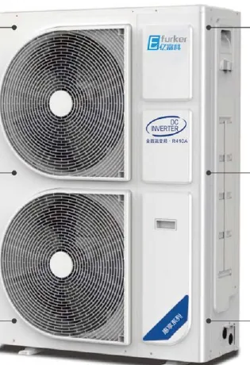
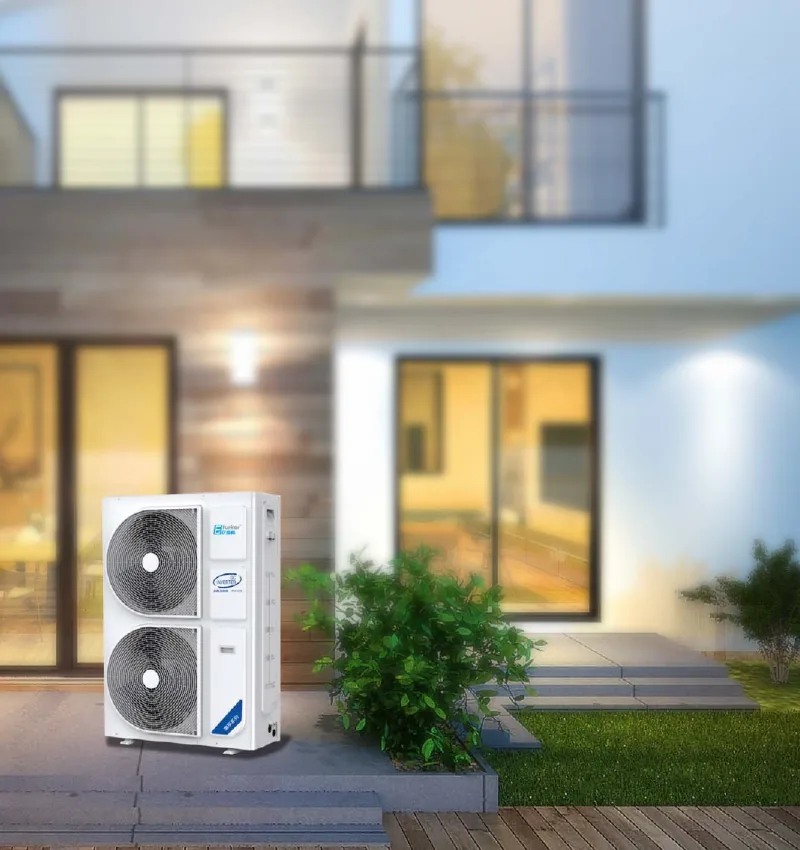
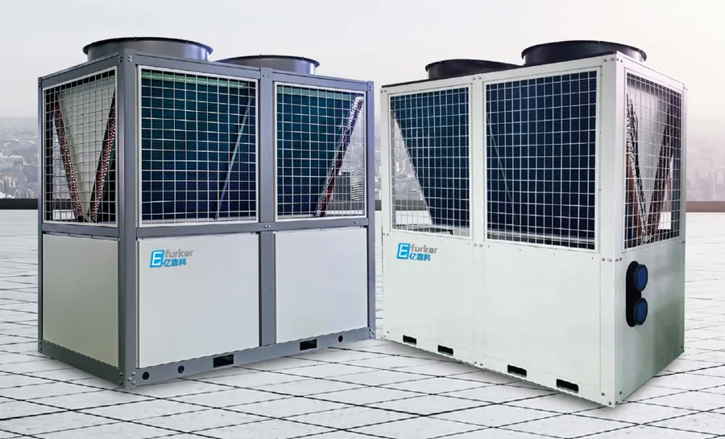
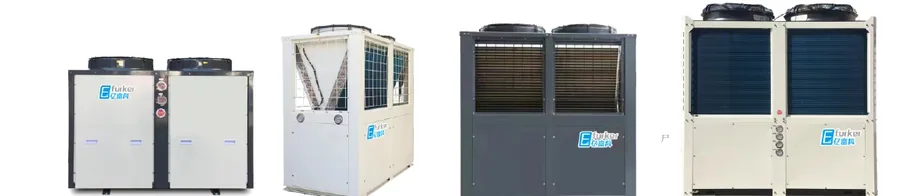

Басты бет / Ауа көзді жылу сорғылары
Ауа көзді жылу сорғылары
Сыртқы ауадан жылыту, салқындату және ыстық су. Сыртта −20℃ болса да жылытады.
Өндіруші: Efurker (亿富科, Бейжің). Инверторлық технология, R410A хладагенті, су 55℃-қа дейін.

| Параметр | YFK-BZ3D | YFK-BZ5D | YFK-BZ5DII | YFK-BZ6D | YFK-BZ6SII | YFK-BZ8SII | YFK-BZ10SII | YFK-BZ15SII |
|---|---|---|---|---|---|---|---|---|
| Қоректендіру | 220V | 220V | 380V | 220V | 380V | 380V | 380V | 380V |
| Жылыту қуаты, сыртта 7℃, кВт | 9 | 14.6 | 14.6 | 16 | 16 | 22.3 | 32 | 40 |
| Жылыту қуаты, сыртта −12℃, кВт | 6.4 | 10.5 | 10.5 | 11.8 | 11.8 | 15.5 | 20.6 | 25.5 |
| Жылыту қуаты, сыртта −20℃, кВт | 5.4 | 9.5 | 9.5 | 10.5 | 10.5 | 13.5 | 16.6 | 21 |
| Салқындату қуаты, сыртта 35℃, кВт | 5.7 | 9 | 9 | 9.5 | 9.5 | 11.5 | 17 | 20 |
| Ең көп кіріс қуаты, кВт | 3.4 | 6.4 | 6.4 | 6.6 | 6.6 | 8 | 12 | 13 |
| Шу деңгейі, dB(A) | 60 | 60 | 60 | 62 | 62 | 62 | 62 | 62 |
| Судың ең жоғары температурасы | 55℃ | |||||||
| Хладагент | R410A | |||||||
| Өлшемдері, мм | 770×353×910 | 938×392×1369 | 938×392×1369 | 938×392×1369 | 938×392×1369 | 938×392×1369 | 1118×425×1556 | 1118×425×1556 |
| Салмағы, кг | 57 | 90 | 90 | 98 | 95 | 122 | 170 | 185 |

| Параметр | YFKZ8D | YFKZ9D | YFKZ12D | YFKZ14D | YFKZ16D | YFKZ20D | YFKZ22D |
|---|---|---|---|---|---|---|---|
| Қоректендіру | 220V (22D: 380V таңдауға болады) | ||||||
| Жылыту қуаты, сыртта 7℃, кВт | 8 | 9 | 12.8 | 14.6 | 16 | 20 | 23 |
| Жылыту қуаты, сыртта −12℃, кВт | 5.2 | 6 | 8.7 | 10.5 | 11.6 | 13.5 | 15 |
| Жылыту қуаты, сыртта −20℃, кВт | 4.55 | 4.86 | 7.13 | 9.6 | 9.8 | 11.6 | 12.5 |
| Салқындату қуаты, сыртта 35℃, кВт | 5.1 | 6 | 6.6 | 8.9 | 9.2 | 10 | 13 |
| Ең көп кіріс қуаты, кВт | 3.08 | 3.4 | 5.2 | 6.4 | 6.6 | 7.05 | 8 |
| Шу деңгейі, dB(A) | 58 | 58 | 58.5 | 59 | 59 | 59 | 59.5 |
| Судың ең жоғары температурасы | 55℃ | ||||||
| Хладагент | R410A | ||||||
| Өлшемдері, мм | 845×320×695 | 910×353×770 | 938×392×1369 | 938×392×1369 | 938×392×1369 | 938×392×1369 | 938×392×1369 |
| Салмағы, кг | 50 | 76 | 115 | 130 | 130 | 130 | 145 |
Сынақ шарттары: жылыту сыртта 7℃, су 45℃; сыртта −12℃ және −20℃, су 41℃; салқындату сыртта 35℃, су 7℃. Сипаттамалар өзгеруі мүмкін; құрылғы тақтайшасы басым.

Коммерциялық жылу сорғылары (SHBR)
Мектептерге, қонақүйлерге, зауыттар мен кеңселерге. Сыртта −30…+43℃ жұмыс істейді. Модульдер біріктіріледі, қашықтан басқарылады.
| Параметр | SHBR-25IIA | SHBR-50IIA | SHBR-60IIA |
|---|---|---|---|
| Номиналды жылыту қуаты (сыртта 7℃), кВт | 69 | 155 | 168 |
| COP (жылыту) | 3.3 | 3.4 | 3.4 |
| Жылыту қуаты, сыртта −12℃, кВт | 51 | 102 | 111 |
| Төмен температурадағы жылыту қуаты, кВт | 43.44 | 86.88 | 94.55 |
| Салқындату қуаты, сыртта 35℃, кВт | 65 | 130 | 130 |
| Қоректендіру | 380V / 3N / 50Hz | ||
| Ең жоғары ток | 62 A | 125 A | 137 A |
| Қорғаныс дәрежесі | IPX4 | ||
| Хладагент | R410A | ||
| Шу деңгейі, dB(A) | ≤62 | ≤69 | ≤70 |
| Өлшемдері, мм | 2090×1100×2170 | 2270×1300×2250 | 2320×1200×2450 |
| Салмағы, кг | 700 | 1200 | 1300 |

Қатты аязға арналған орталық ыстық су және жылыту (KLR)
Мектептерге, қонақүйлерге, зауыттарға тәулік бойы ыстық су. 3P-тен 60P-ке дейін, 8.3–171 кВт. 380 В қорек.
| Модель | Қуаты | Номиналды жылыту қуаты (сыртта 7℃), кВт | COP (жылыту) | Салмағы, кг |
|---|---|---|---|---|
| YFK-KLR030 | 3P | 8.3 | 3.46 | 105 |
| YFK-KLR050 | 5P | 15.8 | 3.76 | 145 |
| YFK-KLR060 | 6P | 18.4 | 3.54 | 162 |
| YFK-KLR070 | 7P | 22.1 | 3.74 | 182 |
| YFK-KLR080 | 8P | 23.8 | 3.6 | 188 |
| YFK-KLR100 | 10P | 33.12 | 3.6 | 312 |
| YFK-KLR120 | 12P | 36.8 | 3.49 | 350 |
| YFK-KLR150 | 15P | 42.6 | 3.49 | 420 |
| YFK-KLR200 | 20P | 62.4 | 3.51 | 582 |
| YFK-KLR250 | 25P | 73.6 | 3.5 | 650 |
| YFK-KLR300 | 30P | 88.2 | 3.5 | 825 |
| YFK-KLR400 | 40P | 114 | 3.5 | 1155 |
| YFK-KLR500 | 50P | 154.8 | 3.6 | 1385 |
| YFK-KLR600 | 60P | 171.2 | 3.42 | 1472 |
Жылыту қуаты: сыртта 7℃, су 40/45℃.
- Еденнен сәулелік салқындату: суық су жылы еден құбырлары арқылы жүреді. Қарапайым кондиционерден 28–40% үнемді, суық жел жоқ.
- Контейнерлік құрама энергостанция (BIM моделі бойынша зауытта жиналады).
- Теңгерме клапандар, бөлме температурасы мен ылғалдылық датчиктері.